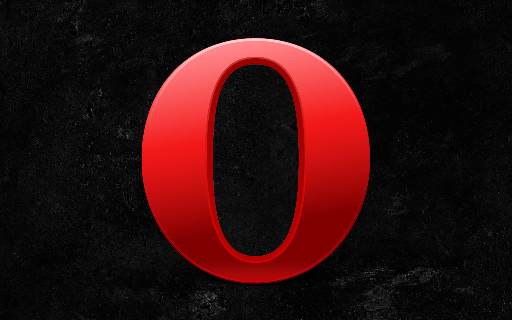

Google Chrome
Google Chrome, 是由Google开发的一款设计简单、高效的Web浏览工具。

Mozilla Firefox
Mozilla Firefox, 是一个自由及开放源代码网页浏览器。

Safari
Safari，是苹果计算机的操作系统Mac OS X中的浏览器。

Opera
Opera，是一款挪威Opera Software ASA公司制作的支持多页面标签式浏览的网络浏览器。

Internet Explorer
Internet Explorer，是微软公司推出的一款网页浏览器。